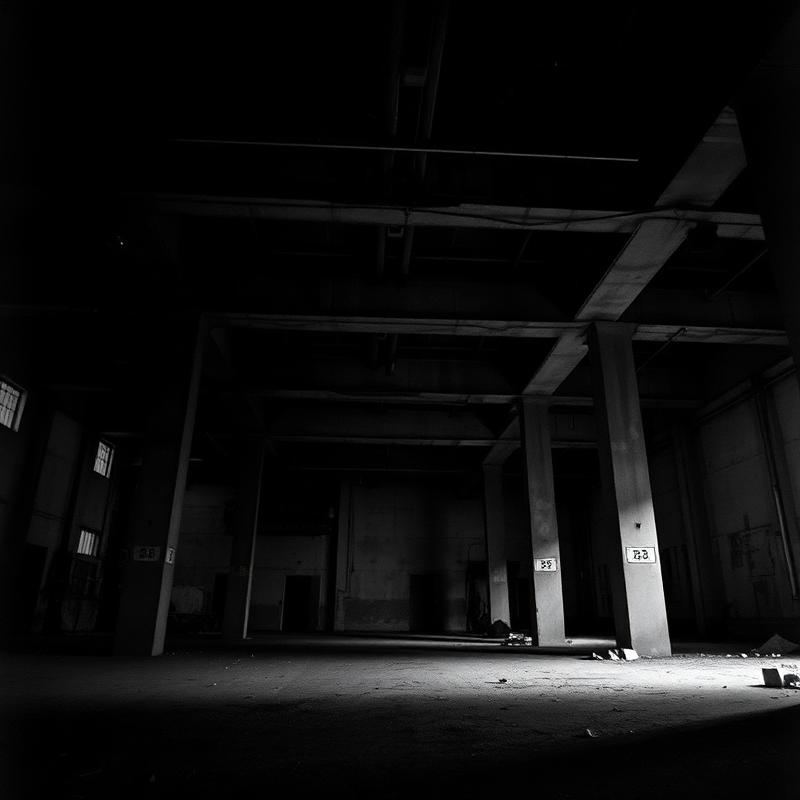

ID_ARQ: 504
SETOR: LAPA
ACESSO: RESTRITO

Galpão 504
● DISPONÍVELEstrutura industrial desativada. Som ressoa nas vigas. Capacidade não oficial: 600 corpos. Entrada por portão lateral. Fluxo guiado por redes e por quem já sabe.
> DESCRIPTOGRAFAR_COORDENADA